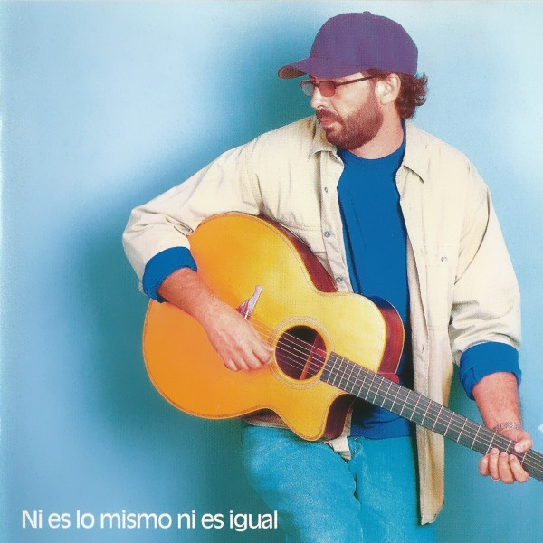
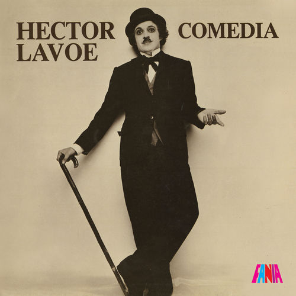

Ni Es Lo Mismo Ni Es Igual - Juan Luis Guerra

Portada del álbum de Juan Luis Guerra (1998).
1. La Hormiguita
2. Quisiera
3. Sobremesa
4. El Niagara en Bicicleta
5. Vale La Pena
Comedia - Hector Lavoe

Portada del álbum de Hector Lavoe (1978).
1. Por qué Te Conocí
2. Bandolera
3. Tiempos Pasados
4. Comedia
5. El Cantante
Formula, Vol. 1 - Romeo Santos
Portada del álbum de Romeo Santos (2011).
1. Que Se Mueran
2. Llévame Contigo
3. Promise
4. You
5. Soberbio